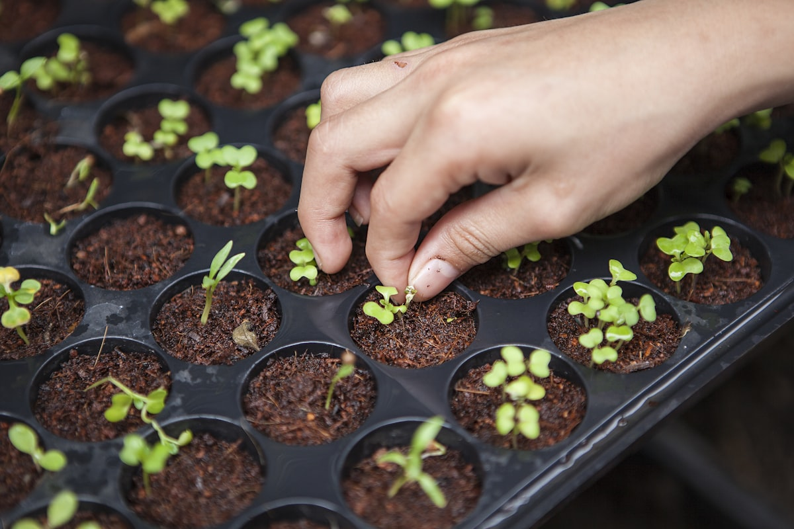
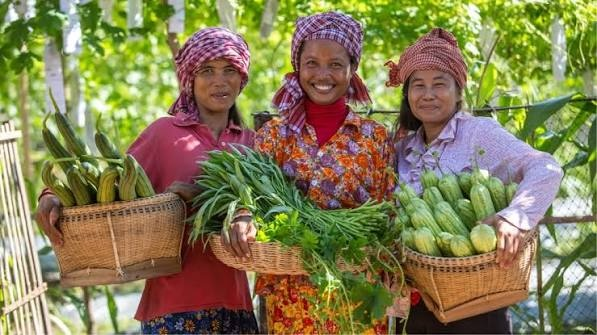

01 / ROOTS
01 / ROOTS
The Soil & Roots
Health, Habits & Biology
No magnificent oak stands without deep subterranean anchorage. Replenish your physical vitality, restore circadian sleep, and detoxify your mental topsoil.
Tend Your SoilModern existence urges you to hurry, force, and exhaust your spirit. The Tree of Life teaches an older, unshakeable truth: you cannot pull a sprout to make it grow faster. Tend the soil, plant true seeds, honor the seasons, and let abundance emerge naturally.
Ancient Principles
Root to Harvest
Organic Living
From deep invisible underground roots to the canopy bearing golden fruit, each pillar corresponds to a vital dimension of your existence.
01 / ROOTS
No magnificent oak stands without deep subterranean anchorage. Replenish your physical vitality, restore circadian sleep, and detoxify your mental topsoil.
Tend Your Soil
02 / GERMINATIONYou only harvest what you plant. Distinguish between authentic heirloom desires that nourish the soul and invasive vanity weeds scattered by external consensus.
Select Your SeedsGreat trees grow through gentle, unrelenting daily watering and courageous pruning. Channel your vital energy by cutting away dead commitments.
Nurture Growth 04 / RHYTHMS
04 / RHYTHMS
Nature never demands summer in the dead of winter. Learn to diagnose your current life season—Spring sowing, Summer toil, Autumn harvest, or Winter rest.
Read Your Season
05 / ECOSYSTEMTrees never grow alone; underground root networks share water and warnings. Build your personal council of elder mentors, peers, and apprentices.
Enter the Forest 06 / LEGACY
06 / LEGACY
Harvesting is not mere hoarding; it is mindful celebration, extracting eternal wisdom from triumphs and trials, and returning seeds into the earth.
Reap the FruitsLook upon their radiant smiles and their woven baskets brimming with fresh cucumbers, leafy gourds, and vibrant greens. This is what cultivation looks like when life is aligned with natural law.
In modern society, success is often depicted as a solitary executive burning midnight oil in an empty glass tower. The Farmer of Life reminds us that true prosperity is always communal: clean soil, shared laughter, wholesome crops, and the profound peace of knowing your sweat nourished those you love.
Contrast the burnout trap of modern hyper-acceleration against the quiet, inevitable power of natural cultivation.
Nature never forces spring in the middle of winter. Select the honest state of your energy below to receive tailored ancient farming wisdom.
A mighty oak is not built in a day; it drinks drop by drop. Tap each habit you have nourished today to watch your vitality sprout bloom.
Take the Cultivator's Pledge, receive our weekly seasonal almanac, and begin tending the soil of your greatest aspirations.